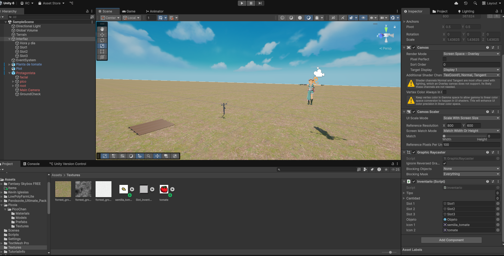

Tu abuelo te heredó el campo en la Pampa, tu trabajo es el de encargarte del campo que una vez fue de tu abuelo, en su casa habían semillas de varias plantas, y así es como decidiste empezar tu vida como agricultora allí.
Es un videojuego de granja hecho en Unity, en el que posees un sistema de parcelas en las que podés plantar tomates, y en un futuro muchas plantas más. Además hay un sistema de día y noche y un inventario en el que guardás las semillas de tomate y los tomates. El jugador o la jugadora puede ir a su casa para dormir y pasar al siguiente día.
Grajna se origina desde el proyecto de "Juego de Miedito", el cual originalmente iba a ser un videojuego de granja en 2D, sin embargo, posteriormente nos enteraríamos que ibamos a tener que hacer un proyecto en Unity y pensamos que sería una buena idea realizar un prototipo de juego de granja en dicho motor de creación de videojuegos, en un principio también se pensaba en hacerlo en dos dimensiones, sin embargo uno de los requerimientos de los proyectos que se hicieran en Unity era que fueran en tres dimensiones, es así que la escala del proyecto cambió drásticamente, puesto a que no teníamos ninguna experiencia en el desarrollo de videojuegos en 3D. Aún así esto permitió que adquirieramos muchos conocimientos respecto a cómo funciona la programación y el uso de Unity Engine, motor de creación de videojuegos que es muy completo en lo que brinda a un desarrollador o desarrolladora de videojuegos pero que requiere de aprendizaje.